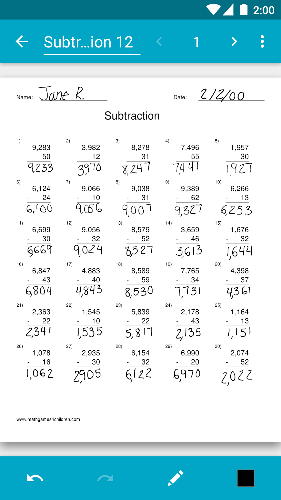

Squid 快问快答：一款把手写笔记做进 Chromebook 生态的应用
整理一篇关于 Squid 的快问快答——它是什么、谁该用、怎么装、PDF 批注靠不靠谱、付费值不值，九个问题把这款手写笔记应用说清楚。
整理一篇关于 Squid 的快问快答，九个问题覆盖从定位到付费的全部常见疑问。
一问：Squid 到底是什么？
Squid 是一款手写笔记应用，核心卖点是"把纸搬到屏幕上"——用笔（或手指、鼠标）直接在空白页、PDF、图片上书写、圈点、批注。它的特色在于同时覆盖安卓平板和 Chromebook 两个平台，在 Chromebook 上甚至能做到接近原生的低延迟墨迹，它的官网上有不少真机演示视频。如果你见过课堂上老师在 PDF 讲义上红笔圈重点的那种感觉，Squid 做的就是把这件事搬到电子设备上。
二问：谁需要它？
三类人最适合。学生党（尤其是用安卓平板或带笔 Chromebook 的）：课堂笔记、作业 PDF 批注、考前讲义圈重点。教师群体：批改电子作业、在 PDF 试卷上圈错、投屏到教室大屏演示。职场人士：会议纪要里用颜色分层（红色决议、绿色待办）、合同条款批注、头脑风暴随手画思维导图。反过来说，如果你主要靠打字做笔记，Squid 可能不是刚需——它的优势全在手写体验。

三问：怎么装？
安卓平板从 Google Play 商店装就行；带笔的 Chromebook 同样通过 Play 商店安装（ChromeOS 支持安卓应用）。亚马逊 Fire 平板用户可以从 Amazon Appstore 找到对应版本，拿不准渠道的话直接从官方下载入口进更稳妥。安装免费，基础功能直接可用。教育场景的学校可以走批量授权路线，按师生人数、按学年计费。
四问：PDF 批注是怎么回事？
这是 Squid 付费功能里使用率最高的一项。任意 PDF（讲义、试卷、合同、论文）导入后直接变成一张"可写的纸"，一页 PDF 对应一页笔记，用笔圈点、批注、签名都行。特别的是它的渲染机制——PDF 以原始格式作为背景，放大时实时重渲染，小字号的试卷和合同条款放大后笔迹和原文一起保持清晰。批完导出发回给对方，笔迹会合成进新 PDF 里，不是截图。少数受密码保护的 PDF 需先解除限制才能导入，更多边界情况可以翻squid文档。
五问：会议纪要怎么用它记？
一套颜色规则够用了。黑色或蓝色记发言要点和背景信息，红色专门标"定了什么"（决议、结论），绿色写待办事项加负责人和时间点。会后扫一眼红色和绿色，三十秒就能读完会议成果。可以在会前先建一页议程，把议题编号打好、参考 PDF 插进来；会中随讲随翻；会后把红色和绿色内容提炼到单独一页"行动页"，截图直接贴群聊。议程页做过一次之后，每次开会复制改日期就行。
六问：Chromebook 上有什么特别的？
Squid 对 Chromebook 做了专门适配，是目前同类应用里教育生态最完整的路径之一。带主动笔数字化器的机型（有触控笔槽或官方配笔）支持压感笔迹、手掌防误触、低延迟墨迹——墨迹紧跟笔尖，跟在纸上写的感觉几乎一样。无笔机型也能用鼠标画画、键盘打字、触摸板平移。有两个已知限制：ChromeOS 系统层面屏蔽了笔侧键（平台限制，不是 Squid 的问题）；导出想发到 Gmail 或 Drive，需要装对应的安卓应用，只装网页版的话分享列表里找不到它们。
七问：免费和付费差在哪？
免费版提供基础的手写、笔记整理、简单导出，日常记点东西够用了。付费版解锁 PDF 导入、高级纸张模板、附加工具包等。订阅取消后，付费功能会用到当前计费周期结束，到期后不能再新建付费内容，但已经创建的所有笔记、已经导出的文件永远保留、永远可看——不会丢任何东西。购买渠道要注意：Google Play 买的在 Amazon 版上不通用，跨渠道需要重新买或找对应渠道的恢复入口。长期只缺一两样功能的话，买断工具包可能比订阅更划算。
八问：有什么坑要提前知道？
三个高频问题。第一，付费功能突然不见了——先确认登录的商店账号和购买时是同一个，然后进应用找"恢复购买"入口，不行再重启应用让商店校验刷新。第二，刚换了设备——同一渠道下登录同一账号就能恢复订阅，跨渠道就麻烦了，尽量保持购买渠道统一。第三，侧键手势在 ChromeOS 上用不了，这是系统限制，不是 bug。其他的比如个别 PDF 密码保护、云备份需要手动开，都不算大坑。
九问：值不值得长期用？
如果你手头有带笔的安卓平板或 Chromebook，且经常需要在 PDF 上手写批注，Squid 是目前同类里体验最完整的选择之一。免费版足够日常试用，付费版的 PDF 导入是高频刚需功能——学生和教师群体大概率用得上。跨渠道购买不通用这点要提前注意，选定商店就固定下来。另外，这类手写笔记的整理思路和参考文档我也维护了一份，国内访问友好的镜像同步在 GitHub、Gitee 和 GitCode 三个仓库里，按需取用。